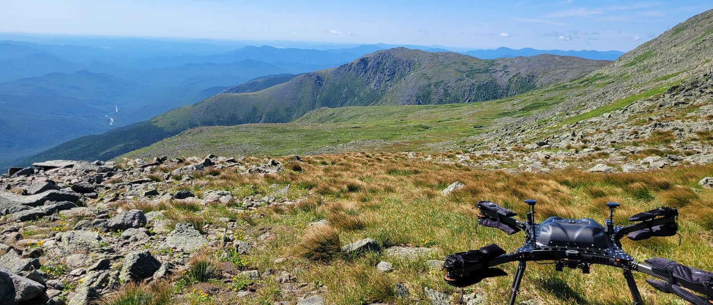

From tree crowns to forest patterns
Scaling with remote sensing, from the individual tree to the landscape

I use fine-scale remote sensing to segment individual tree crowns and link them to forest size-abundance patterns. My work explores how local structure scales up to landscape dynamics, advancing theory in forest and landscape ecology.
Working with multimodal remote sensing, including airborne LiDAR, hyperspectral, and high-resolution imagery, I develop and compare crown-segmentation approaches across spatial resolutions. The resulting individual-tree maps let me test how fine-scale forest structure gives rise to landscape-scale patterns of size, abundance, and diversity.
This work builds on earlier remote-sensing research using GEDI spaceborne LiDAR to measure forest structure and disturbance in tropical forests, and connects to the ForestForTrees R package for inferring forest structure from remote sensing data. Together these tools help scale ecological insight from the individual tree to the continent.
Attention and citation counts update automatically as the work is cited and shared. The crown-segmentation chapter is in progress; its metrics will appear here once published.
Publications
- ForestForTrees: an R package to infer forest structure from remote sensing data. Methods in Ecology and Evolution.
- Validation and error minimization of GEDI data in the South American tropics. Remote Sensing 16(19).
- Measuring understory fire effects from space: canopy change in response to tropical understory fire and what this means for applications of GEDI for tropical fire. Remote Sensing 15: 696.
- Multimodal crown segmentation across spatial resolutions.
Collaborators & resources
- Collaborators Record Lab, University of Maine, NSF Imageomics Institute
- Software ForestForTrees R package (see paper above)
- Status Crown-segmentation dissertation chapter in progress
Gallery
To add photos, drop square images into assets/forest/ and
uncomment the gallery block in this file (instructions in README.md).